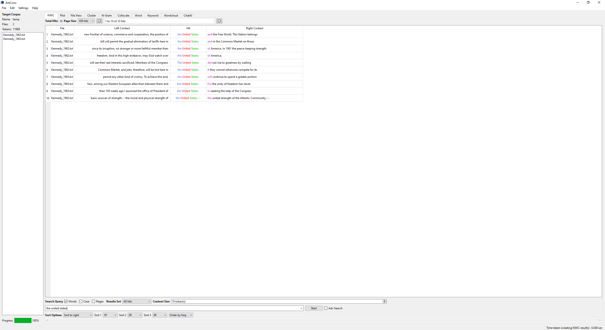
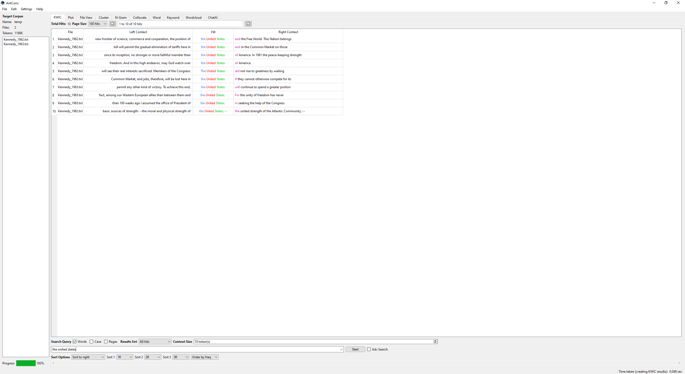
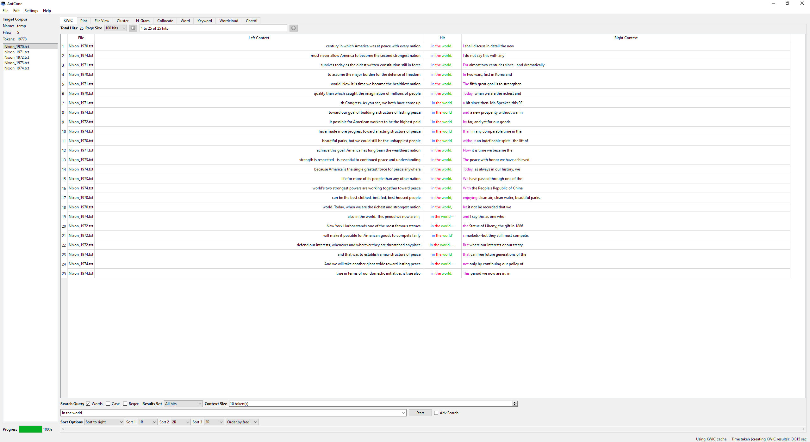
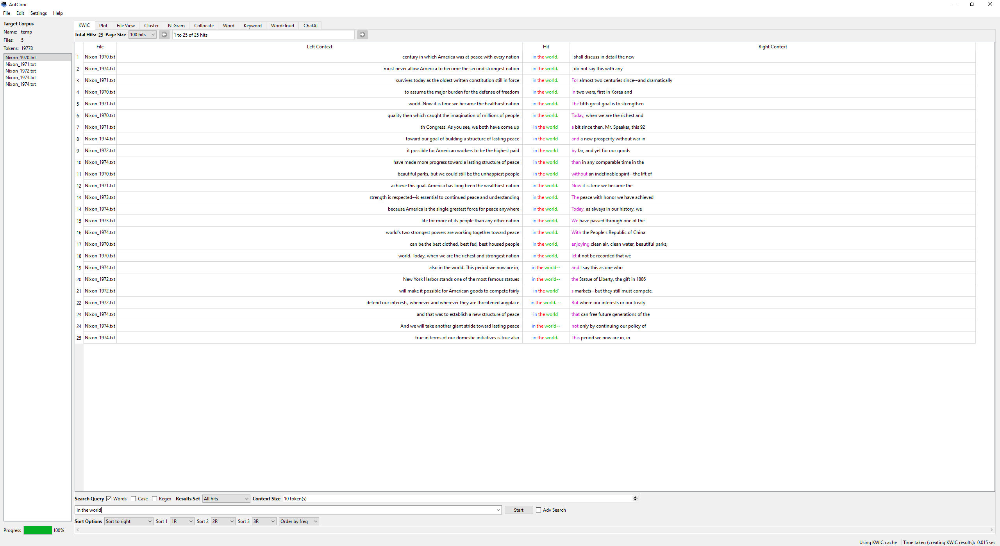

For my Text analysis with Antconc and Voyant I decided to compare Kenndy's State of the Union With Nixons State of the Union.
 


This is a dynamic network export that I got from Voyant. This shows you every stop word and how much it was used for nixons speech with "new" being the most used word in all his State of the Unions being used 59 times, "world" 43 times, and "nations" 39 times.
 


This is a dynamic network export that I got from Voyant. This shows you every stop word and how much it was used for nixons speech with "new" being the most used word in all his State of the Unions being used 115 times, "people" 105 times, and congress 102 times.
Nixon_1970 | Nixon_1971 | Nixon_1972 | Nixon_1973 | Nixon_1974
With this comparison I wanted to see if Kennedy or anything relating to what happend to him showed up in Nixon's State of the Union speeches or if anything showed up about kenndy becasue they were going against one another for presidency in 1960. I did like what it showed me with kennedy in Nixon's speech and I was suprised by that. As you would image for a State of the Union you wouldn't bring up the past. But in this case I would imagine it to be differnt as Kenndy had been assasinated 11 years ago after Nixon himslef ran against Kenndy. Another comparison/contarst that could be made was kennedy's speech was oblivously shorter that Nixons becasue of the assaination incident so i was not able to get as big of clusters or N-gram sizes, for exapmle in Kennedy's files the world that showed up the most was "new" (which was also the most used word in Nixon's) But it only showed up59 times while the word "new" showed up 115 times. In Nixon's there was 19,778 tokens but in kennedy's there was only 11,988 tokens still over 10,000 but still not that many. Another thing that was diffrent it was especially seen in the 5 gram clusters that kennedys was about the peoples safty, economy, health, and rights. Nixons was more about the congress and the accomplishments that it has made rather than its people. A thing i wounder about is in the 60's it seemed a lot about the people but after the 60's it was a lot about the government I wonder if this is a result of the vietnam war, or threats of wars around the world especially the Cuban missle crisis in 1962 and Bay of Pig's invasion in 1961. and is lasting afffects over the years.
The reason as to why i chose to look at Kennedy and Nixons State of The
Unions Speeches was becasue on of my great uncles was obsessed and very
intrested in the Kennedy assaination so i have seen a lot of things
relating to Kennedy but also relating to Nixon
so I though it would
cool and quite intresting to go back and look and stdy through those
speeches to learn more about them and more about what was going on with
context.